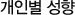

펀드투자 실전

개인성향은 크게 진취적/공격적/중도적/보수적/안정적 성향으로 나뉘어지게 되며, 각각의 펀드 종류의 특징에 따라 투자상품을 정하게 됩니다.
- 보수적 투자자라면 주식투자 비중이 30%인 안정주식형이나 절대수익추구형, 주가지수연계증권(ELS) 등을 활용하는 것이 좋습니다.
이들 상품은 시스템을 이요한 투자로 은행금리에 플러스 알파 또는 국고채금리 알파 정도의 수익을 얻을 수 있습니다.
- 어느 정도의 위험도 감수하면서 안정적인 투자를 선호한다면 전환형펀드 · 안정성장형펀드 · 배당투자펀드 등이 적당하며, 일정 목표 수익률을 올리면 주식과 채권의 혼합투자가 이뤄져 투자위험은 낮고 장기 투자할 경우 목돈도 쥘 수 있습니다.
- 위헌선호도가 높고 주식투자 경험이 있는 적극적인 성향의 투자자라면 주식편입비율이 30% 이상인 성장형펀드와 인덱스펀드 등이 유리합니다.
이 가운데 지수 상승에 대한 기대감으로 투자할 경우 즐겨찾는 인덱스펀드는 시장전망과 무관하게 펀드수익률이 특정 주가지수의 수익률을 따라가도록 설계되어 있기 때문에 초보 펀드투자자는 인덱스펀드가 무난합니다.